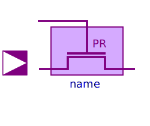
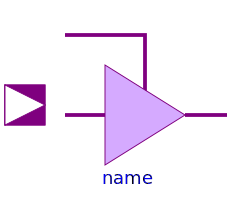
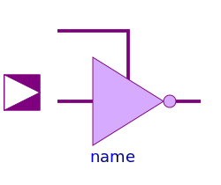
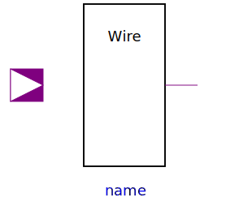

| Name |
Description |
 NXFERGATE NXFERGATE |
Transfergate with enable active high |
| NRXFERGATE |
Transfergate with enable active high. Output strength
reduced. |
 PXFERGATE PXFERGATE |
Transfergate with enable active low |
|  PRXFERGATE |
Transfergate with enable active low. Output strength
reduced. |
|  BUF3S |
Tristate buffer with enable active high |
| BUF3SL |
Tristate buffer with enable active low |
|  INV3S |
Tristate Inverter with enable active high |
 INV3SL INV3SL |
Tristate inverter with enable active low |
|  WiredX |
Wired node with multiple input and one output |